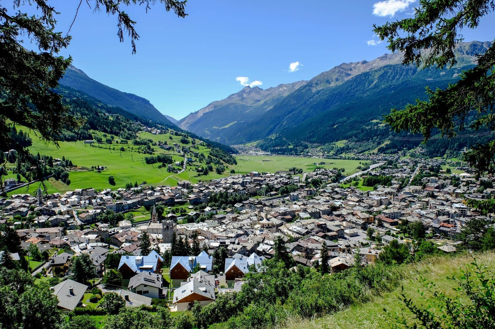

Il Contado di Bormio
La conca di Bormio è ampia e luminosa; scavata nei secoli dai ghiacciai e dai corsi d’acqua, è circondata da monti che verso nord formano una barriera di calcare e dolomia la cui cima princi- pale è la Reit (3075 m. slm.). Vi confluiscono tre valli: la Valdidentro, la Valdisotto e la Valfurva. La regione gode di un clima particolarmente favorevole, nonostante l’altitudine e la latitudine. Si può evidenziare anzitutto la secchezza eccezionale dell’aria e la sua trasparenza. Prolungata è l’esposizione al sole. Le giornate con cielo coperto sono scarse. La temperatura massima difficilmente supera i 28°, quella minima i -14°. Le precipitazioni nevose sono abbondanti; la particolare esposizione a nord di alcuni versanti delle zone sciistiche assicura la permanenza del manto nevoso sino a primavera inoltrata.
Il Bormiese è per gran parte entro i confini del Parco Nazionale dello Stelvio, una delle più vaste aree protette d’Europa. La caratteristica principale della copertura vegetale è data dalla presenza di numerosi boschi molto interessanti per estensione e contenuto floristico. Gli abeti rossi rivestono gran parte delle vallate intorno a Bormio. Frequenti nelle valli sono altresì pini cembri, larici e betulle. Straordinaria la presenza di fiori con 1800 specie. Eccezionale è l’ambiente delle sorgenti termali nel quale, a circa 1450 m., prospera una felce che raggiunge di norma ap- pena i 700-800 metri di altitudine. Un notevole elemento di differenziazione nella vegetazione è dato dall’affioramento di rocce sedimentarie (calcari e dolomie) che determinano la crescita di boscaglie a pino mugo con erica nei luoghi meno innevati e con rododendro irsuto dove l’innevamento è più prolungato.
La regione offre un habitat ideale per la tipica fauna stanziale alpina, rappresentata da cervi, da caprioli, da camosci e da stambecchi. La fauna minore è rappresentata da numerose colonie di marmotte e di scoiattoli, nonché di tassi, di ermellini, di volpi e di lepri. Numerosi sono gli uccelli con circa 200 specie segnalate, tra i quali il gallo forcello, alcuni esemplari di aquila reale e gipeto (avvoltoio degli agnelli). E’ sorprendente la presenza di insediamenti permanenti a una altitudine che altrove segna l’inizio del deserto nivale. Sono ancora visibili le tipiche “baite” caratterizzate dalla presenza del legno, ultimi esemplari di un’architettura rurale che esprime un’autentica forma di cultura.